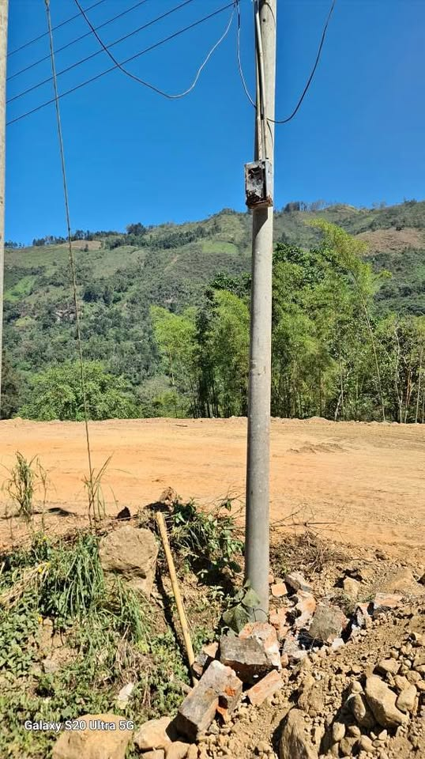

Precio desconocido 1,825 m²

Venta de terreno en canchaque. Área 1825.24mt2 Papeles en orden. Título de propiedad Escritura pública expedida por RRPP. Ya se encuentra limpio y plano, en toda la pista, llegando a Canchaque. 70mtl de frontera en pista. Listo para negocio y su casa de campo. rodeado de naturaleza, fauna y flora. Referencia, al lado del Restaurante EL OSO. Contacto Hector.A.D